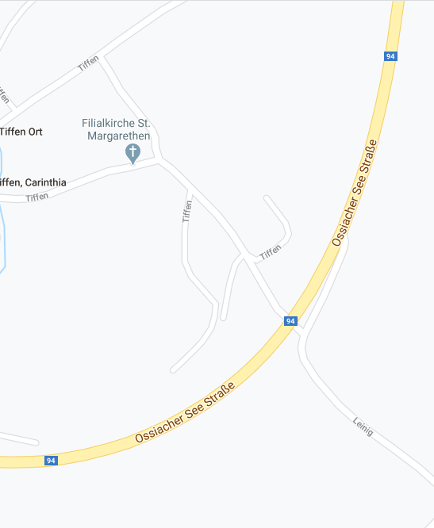
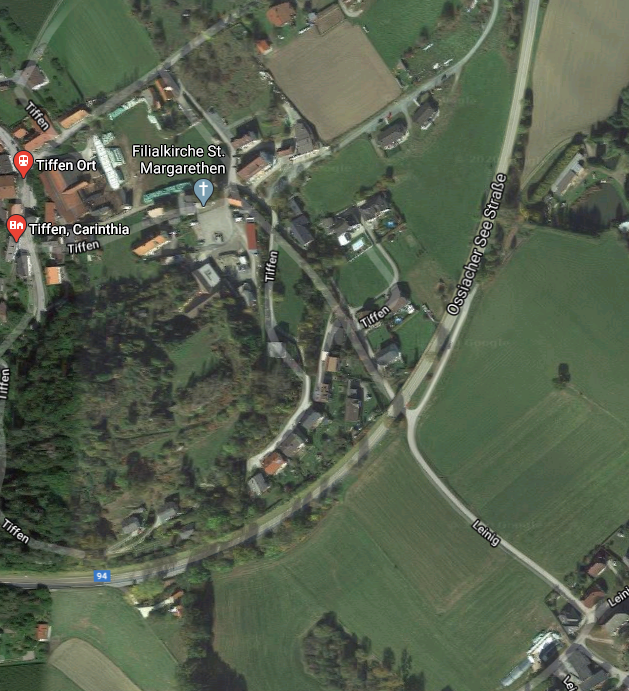

iBridge Test Site
We maintain a test station on a local bridge for development purposes.
However, we are making this site available to prospective clients.
The raw measurements, the derived results and the data analytics are visible in near realtime.
Since we are subject to Austrian data protection laws: data is anonymised and access is password protected.
Location
The bridge is located near the hamlet of Tiffen which lies between Villach and Feldkirchen in the region of Carinthia in southern Austria. The bridge is located on a gentle curve of the federal B94, two lane highway. The speed limit at the bridge is 70KM/h.


Description of the Bridge
The bridge is a relatively small, simple slab construction and crosses an underpass. It is administered by the federal government and maintained by the Carinthian State Government.
Sensors
The bridge is instrumented with seven strain gauges under each lane. Five gaugues are placed in a line perpendicular to the traffic flow: these carry out the load estimation. Two gauges are placed before and after this line, and measure velocity. Additional experimental sensors are implemented on an ad hoc basis. All sensors are monitored by a Spider 5 unit which transmits measurements back to our server.